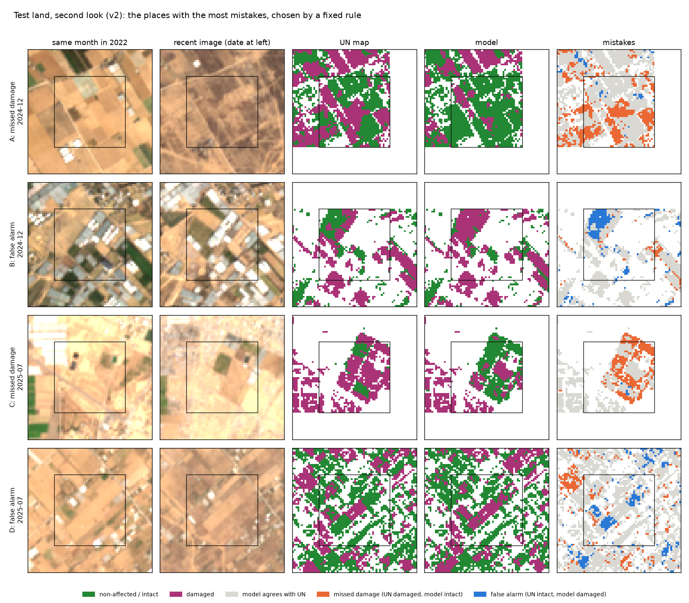

1The question
Khan Younis governorate has about hectares of farmland. By July 2025, UN analysts had marked of it as damaged.
When access opens there will not be enough seeds, water or staff for every field at once, so someone has to decide where to go first.
I had one weekend to work on that. The five steps below are what I did.
Can satellite pictures give aid agronomists a useful list on day one? And how far should they trust it?
2What the satellite sees
Drag across the picture to compare the same month before the war and after. Green is growing plants and pale brown is bare ground.
A field goes green in the growing season and brown after harvest, at about the same time every year. When that pattern stops, something has happened to the field.
The chart follows one real 10-metre patch of farmland: how green it was each month, next to what is normal for it.
Greenness here is NDVI, a standard measure that runs from 0 (bare) to about 0.9 (dense plants). It is worked out from the red and infrared light the satellite records.
3What UN experts say
Analysts at the UN satellite centre (UNOSAT) and at FAO compared every field with its earlier seasons and marked it damaged or not affected. They published of these maps. I used them as the answer key.
Move the slider under the map to go through them month by month. The damaged share of farmland grows from to .
Once the UN marks a field as damaged it stays marked, even if it turns green again later.
4What the AI says, and how to check it
I trained a model on the UN maps. It takes one patch of land at a time, reads how green that patch has been since 2017, and answers one question: was this damaged at some point since October 2023?
Then I tested it on square kilometres of land it had never seen.
The AI's map next to the UN's
Check it yourself
You do not have to believe my scores. The button downloads the trained model ( decision trees) and patches of test land it never saw. Your browser runs the model on every patch and compares its answer with the UN's.
The same counts as a table
The first button gives the same counts every time, because the model has no randomness. The second draws a different 1,000 patches on each click, so its counts move a little. These patches are a random sample of the test land. The scores for all of it are below.
Look at one patch
This is what the model gets to look at: one patch's greenness since 2017. Under it are the model's answer and the UN's.
The full test
Scores run from 0 to 1. The measure is called macro F1, and answering "damaged" every time scores under 0.5 on it. The thin lines show a 95% range.
The final model scores highest in both months. A one-line rule that uses each field's history already beats my whole first model, so the final model reads the same history and learns the rest.
Looking forward in time it is not clearly better than the simple rule (, range ). Every month after July 2025 is a forward guess of that kind, with no UN map to check it.
The exact gaps
Against my first model the final one is ahead by (Dec 2024) and (Jul 2025). Against the simple rule it is ahead by and .
Where it still fails
- At field borders. The UN maps are drawn on a 5-metre grid and the satellite sees 10-metre patches, so a patch on a border holds two answers at once. On patches that are entirely one class the score is and .
- On bare land that is intact. Land that was hardly green before the war gives the model little to read, and it often calls that land damaged.
- When it says "intact". In July 2025 the UN agrees with that answer of the time. When it says "damaged" the UN agrees of the time. Finding the intact land is the harder half.

5From damage to a shortlist
The AI answers one question: was this plot damaged? Which plot to help first is a judgement, so I wrote that part as a plain rule that anyone can check.
priority = how productive the land was × (1 − penalty × damaged share)
How productive is how green the plot got at its yearly peak in 2017 to 2022, ranked against every other plot. Damaged share is the AI's estimate for the plot, from 0 to 1.
Penalty is how much damage should count. Nothing measures that, so the slider leaves it to you.
The top plot for , with its own numbers:
Why this could help
Say a field team only has time for the top 10% of plots. How much intact farmland do they reach?
In December 2024, following this shortlist reaches hectares. Going to the most productive land with no damage map reaches . In July 2025 it is against .
The most productive land was hit hardest, so without a damage map the first visits go almost entirely to damaged fields. I measured this on the plots of test land ( visited), with the UN map as the reference. It does not account for access or safety.
| Most productive land first, no damage map | ha | |
|---|---|---|
| This shortlist | ha | |
| Best possible, using the UN map itself | ha |
| Most productive land first, no damage map | ha | |
|---|---|---|
| This shortlist | ha | |
| Best possible, using the UN map itself | ha |
Explore the map
Click a plot for its details. One square is one hectare (100 m by 100 m). Rings mark the top 15.
Top 15 plots to look at first
Places to look first. The decision stays with the field team. Click a row to see the plot.
Hectares by status
How I kept it honest
The order things happened in
GitHub records when each change arrived. Anyone can check the order on the repository's activity page, read the first and second test plans, and re-score the saved answers.
A new place it never saw
What this tool does not know
- Which land can be entered safely. FAO reported that most Khan Younis farmland could not be reached in April 2025.
- Anything about soil, water, ownership or unexploded ordnance, or what farmers want to grow.
- Whether a field is being farmed now. "Damaged" means damaged at some point since October 2023.
- Anything after July 2025. No UN map exists to check those months.
- What is true on the ground. The UN maps were themselves made from the same satellite's greenness, so a high score means the model agrees with the UN analysts. One outside check: my figure for March 2025 ( damaged) is close to the one FAO published ().
I also looked at the test land twice, once for each version of the model, and the second version was partly inspired by the first one's mistakes there. The Deir al-Balah test is the fresh check on that.
Sources
- Sentinel-2 L2A satellite images, European Space Agency, Copernicus programme, through the Microsoft Planetary Computer.
- UNOSAT and FAO, Gaza Strip cropland damage assessment, Oct 2023 to Jul 2025, from the Humanitarian Data Exchange (CC BY-SA).
- ESA WorldCover 2021 land cover (CC BY 4.0).
- OCHA COD-AB administrative boundaries.
- FAO (2025), Land availability for cultivation in the Gaza Strip as of April 2025 (CD5442EN/1/05.25), for cross-checking only.
- Software: Python, NumPy, pandas, GeoPandas, rasterio, odc-stac, scikit-learn, LightGBM, matplotlib.
- AI tools: I built this with Claude Code (Claude Fable 5.2, Opus 5.5 and Sonnet 5.5, by Anthropic). OpenAI Codex did the independent checks. Every step is logged in the repository.